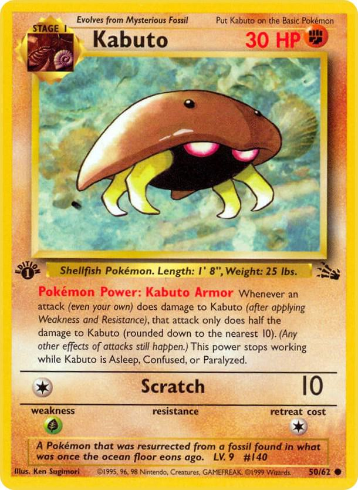

Unique Collections in Pokémon
Within the Pokémon Community
Some of the most impressive collections in the hobby go far beyond traditional set collecting. Collectors often develop highly specialized goals that reflect their personal interests and dedication. Although not always the most interesting to the majority, these sorts of collectors take great pride in their unique collections and often become well-known within the community for their dedication and creativity.
Types of Unique Collections

Examples include:
- Every card featuring a specific Pokémon
- Complete promotional card collections
- Trophy card collections
- Error card collections
- Artist-focused collections
- Signed or sketch card collections
Along your journey you will discover a suprising number of individuals who have collections like these. There is one man in particlar who has earned the nickname "King Kabuto" for collecting every known card of the small fossil Pokemon. While these collections garner attention and make headlines as a wholesome or amusing story, they do also impact the market. A collection that large decreases the population count of certain cards which may in turn inflate their value for a short period of time. Try not to do that!
Passion Beyond Value
Many of these collections are not built around financial value. Instead, they reflect personal passion, creativity, and a desire to preserve a unique piece of Pokémon history.
These collections help demonstrate the diversity of the Pokémon community and show that there is no single "correct" way to enjoy the hobby.